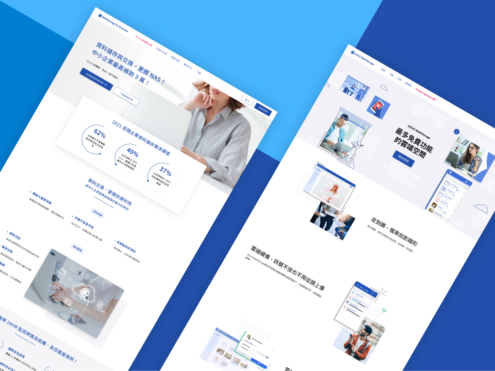

Homepage Integration

ASUS Cloud Incorporation

PROJECT SUMMARY
OVERVIEW AND SUCCESS
In order to integrate the company's newly designed 2C website with the old 2B website, improve design consistency, and optimize the internal website maintenance process, it was decided to move the website to Wordpress. Integrate the company's 2C and 2B homepage into Wordpress, successfully improve the consistency of website design, reduce users' doubts, reduce the time cost of engineers and speed up the operation process on the demand side. In the process, I learned how to build a website from scratch to a complete launch and maintenance of the website.